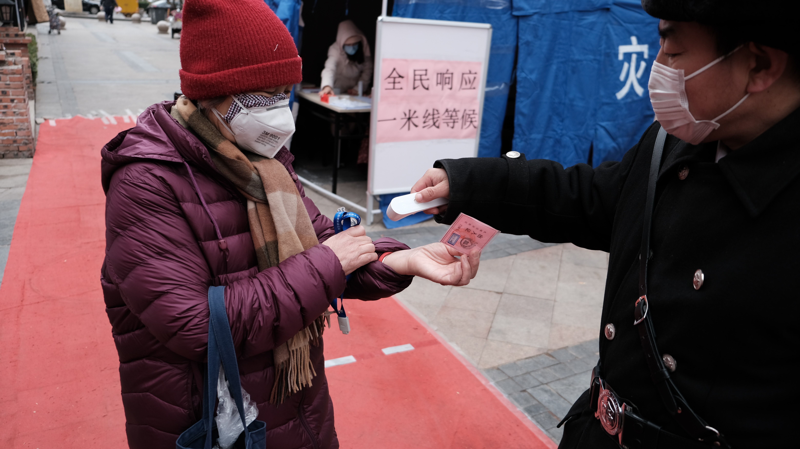

Sejarah

Dilihat dari sejarahnya, virus corona pertama kali diidentifikasi sebagai penyebab flu biasa pada tahun 1960. Hingga sampai tahun 2002, virus itu belum dianggap fatal.Tetapi, pasca adanya Severe Acute Respiratory Syndrome (SARS-Cov) di China, para pakar mulai berfokus pada penyebab dan menemukan hasil apabila wabah ini diakibatkan oleh bentuk baru corona.Pada tahun 2012, terjadi pula wabah yang mirip yakni Middle East Respiratory Syndrome (MERS-Cov) di Timur Tengah. Dari kedua peristiwa itulah diketahui bahwa corona bukan virus yang stabil serta mampu berdaptasi menjadi lebih ganas, bahkan dapat mengakibatkan kematian. Sejak itulah, penelitian terhadap corona semakin berkembang.Sebenarnya virus corona sudah ditemukan sejak lama, baik pada manusia maupun hewan. Contohnya unggas, kalkun, babi, tikus, kucing, dan anjing yang masing-masing ada sendiri. Begitu juga manusia.Dulunya, virus corona ini tergolong host-spesific. Artinya, hanya bisa menginfeksi antar binatang atau antar manusia saja. Tetapi dengan adanya proses mutasi, memungkinkan untuk menginfeksi makhluk hidup lain.
Penyebab

Penyakit ini disebabkan oleh koronavirus sindrom pernapasan akut berat 2 (SARS-CoV-2 atau severe acute respiratory syndrome coronavirus 2). Virus ini menyebar melalui percikan (droplets) dari saluran pernapasan yang dikeluarkan saat sedang batuk atau bersin.Sebuah penelitian di jepang sedang mempelajari kemungkinan penularan dapat terjadi melalui microdroplets yang melayang-layang di udara.Paru-paru adalah organ yang paling terpengaruh oleh penyakit ini karena virus memasuki sel inangnya lewat enzim pengubah angiotensin 2 (angiotensin converting enzyme 2 atau ACE2), yang paling banyak ditemukan di dalam sel alveolar tipe II paru. SARS-CoV-2 menggunakan permukaan permukaan sel khususnya yang mengandung glikoprotein yang disebut "spike" untuk berhubungan dengan ACE2 dan memasuki sel inang.Berat jenis ACE2 pada setiap jaringan berhubungan dengan tingkat keparahan penyakit. Diduga, bahwa penurunan aktivitas ACE2 memberikan perlindungan terhadap sel inang karena ekspresi ACE2 yang berlebihan akan menyebabkan infeksi dan replikasi SARS-CoV-2.[33][34] Beberapa penelitian, melalui sudut pandang yang berbeda juga menunjukkan bahwa peningkatan ekspresi ACE2 oleh golongan obat penghambat reseptor angiotensin II akan melindungi sel inang. Dibutuhkan penelitian lebih lanjut tentang hal ini.ACE2 juga merupakan jalur bagi virus SARS-CoV-2 untuk menyebabkan kerusakan jantung, karenanya penderita dengan riwayat penyakit jantung memiliki prognosis yang paling jelek.
Penelitian
Vaksin

Banyak organisasi menggunakan genom yang diterbitkan untuk mengembangkan kemungkinan vaksin terhadap SARS-CoV-2.Badan yang mengembangkan vaksin terdiri dari Pusat Pengendalian dan Pencegahan Penyakit Tiongkok,[92][93] Universitas Hong Kong,[94] dan Rumah Sakit Shanghai Timur.Tiga proyek vaksin ini sedang didukung oleh Koalisi Inovasi Kesiapsiagaan Epidemi (CEPI), termasuk satu proyek perusahaan bioteknologi Moderna dan proyek lainnya oleh Universitas Queensland Australia.Institut Kesehatan Nasional Amerika Serikat (NIH) bekerja sama dengan Moderna untuk membuat vaksin RNA yang cocok dengan protein permukaan (protein spike) koronavirus dan diharapkan untuk memulai produksi pada Mei 2020.[90] Di Australia, Universitas Queensland sedang menyelidiki potensi vaksin penjepit molekuler yang secara genetik akan memodifikasi protein virus untuk membuatnya meniru koronavirus dan merangsang reaksi kekebalan. Di Kanada, Pusat Vaksin Internasional (VIDO-InterVac) di Universitas Saskatchewan mulai mengembangkan vaksin.serta menargetkan produksi vaksin dan pengujian terhadap hewan pada Maret 2020 dan pengujian terhadap manusia pada 2021.
Antivirus

Penelitian tentang perawatan potensial untuk penyakit ini dimulai pada Januari 2020 dan beberapa obat antivirus sudah dalam uji klinis.Meskipun obat yang benar-benar baru mungkin membutuhkan waktu hingga 2021 untuk berkembang,[100] beberapa obat yang sedang diuji sudah disetujui untuk indikasi antivirus lain atau sudah dalam pengujian lanjutan.Antivirus yang diuji seperti inhibitor RNA polimerase remdesivir,interferon beta,triazavirin, klorokuin, dan kombinasi lopinavir/ritonavir (Kaletra).Obat lain yang sedang diuji termasuk galidesivir, antivirus spektrum luas yang merupakan inhibitor RNA polimerase nukleosida; REGN3048-3051 (Regeneron), kombinasi dua antibodi monoklonal penawar; darunavir/cobicistat, obat yang disetujui untuk HIV; dan PRO 140, sebuah penelitian tentang pengobatan potensial untuk penyakit ini dimulai pada Januari 2020 dan beberapa obat antivirus sudah dalam uji klinis.Karena memiliki efek terhadap koronavirus lainnya[106][107] dan mode tindakan yang menunjukkan pengobatan tersebut mungkin efektif,kombinasi lopinavir/ritonavir telah menjadi target penelitian dan analisis yang signifikan.